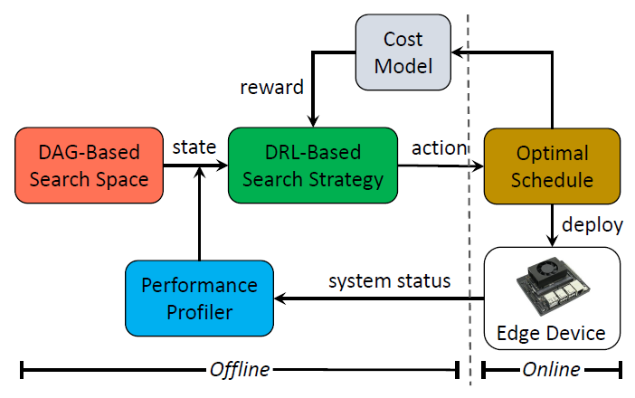
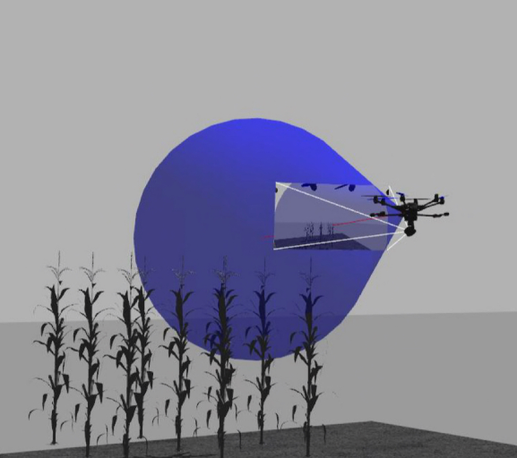
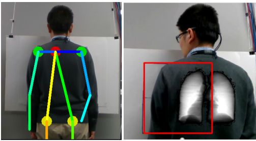
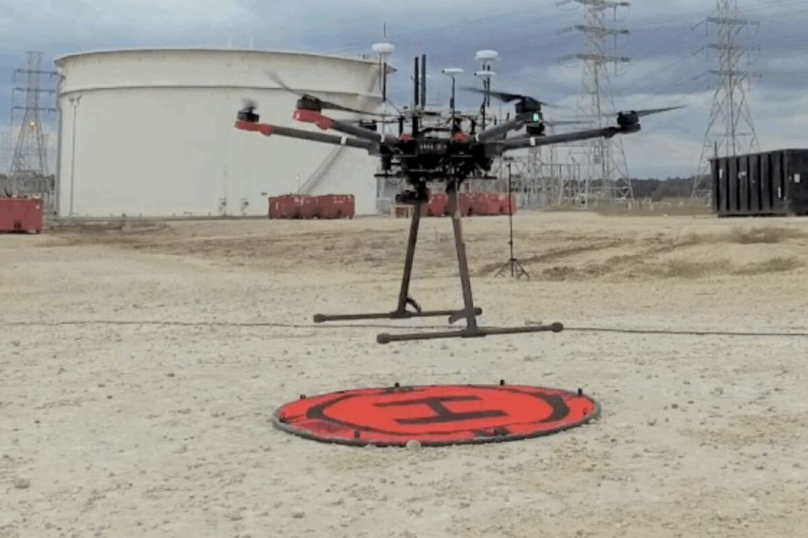
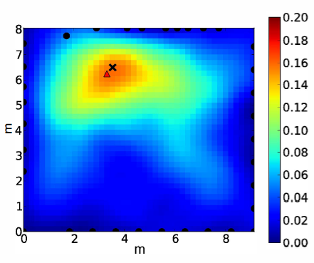
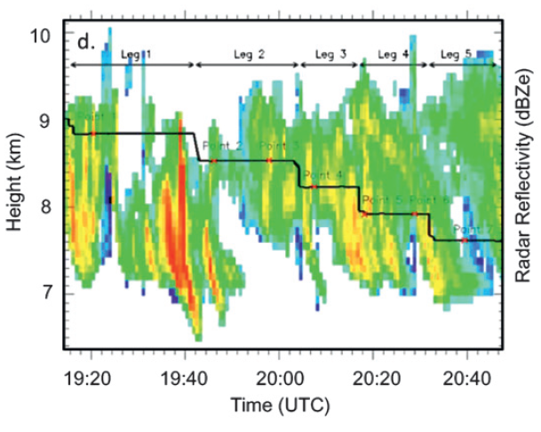

Recent News
Selected Projects

POS: An Operator Scheduling Framework for Multi-model Inference on Edge Intelligent Computing
Ziyang Zhang, Huan Li, Yang Zhao, Changyao Lin, Jie Liu.
ACM/IEEE IPSN’23, May, 2023, San Antonio, USA.
Paper
Ziyang Zhang, Huan Li, Yang Zhao, Changyao Lin, Jie Liu.
ACM/IEEE IPSN’23, May, 2023, San Antonio, USA.
Research domain: Edge Computing
PhD student Ziyang's work was presented in IPSN 2023, San Antonio, Texas, USA.Paper

Containerized Mobile Sensing Simulation Framework for Smart Agriculture
Jingyu Liu, Xinrui Xiao, Yang Zhao, Jie Liu.
ACM SenSys’22, November, 2022, Boston, USA.
Demo
Jingyu Liu, Xinrui Xiao, Yang Zhao, Jie Liu.
ACM SenSys’22, November, 2022, Boston, USA.
Research domain: Cyber Physical System
Undergrad students Jingyu and Xinrui's graduation project was demonstrated at SenSys 2022, Boston, USA.Demo

Person Re-ID Testbed with Multi-Modal Sensors
Guangliang Zhao, Guy Ben-yosef, Jianwei Qiu, Yang Zhao, Prabhu Janakaraj, Sriram Boppana, Austars R. Schnore.
ACM DATA Workshop co-located with SenSys’21 and BuildSys’21, November 17, 2021, Coimbra, Portugal.
Guangliang Zhao, Guy Ben-yosef, Jianwei Qiu, Yang Zhao, Prabhu Janakaraj, Sriram Boppana, Austars R. Schnore.
ACM DATA Workshop co-located with SenSys’21 and BuildSys’21, November 17, 2021, Coimbra, Portugal.
Research domain: Intelligent Sensing, Sensor Fusion
Paper

Mobile X-ray Tomography System with Intelligent Sensing for 3D Chest Imaging
Yang Zhao, E. Tkaczyk, A. Chen, B. Claus, K. Nye, and G. Rao.
SPIE Medical Imaging 2021: Physics of Medical Imaging, February, 2021.
Yang Zhao, E. Tkaczyk, A. Chen, B. Claus, K. Nye, and G. Rao.
SPIE Medical Imaging 2021: Physics of Medical Imaging, February, 2021.
Research domain: Intelligent Sensing, Medical Imaging
Paper

Aerial Inspection of Industrial Assets
GE Global Research Robotics and Machine-to-machine team.
Research project led to incubation of a new business. Research prototype led to the first product in 2017.
GE Global Research Robotics and Machine-to-machine team.
Research project led to incubation of a new business. Research prototype led to the first product in 2017.
Research domain: Industrial IoT, Robotics
News

Radio Tomographic Imaging and Tracking of Stationary and Moving People
Yang Zhao, N. Patwari, J. M. Phillips, and S. Venkatasubramanian.
IPSN, Philadelphia, PA, 2013.
Yang Zhao, N. Patwari, J. M. Phillips, and S. Venkatasubramanian.
IPSN, Philadelphia, PA, 2013.
Research domain: Intelligent Sensing, Wireless Sensor Network
Paper

Retrieval of Cirrus Property with Ground-based Remote Sensing Data
Yang Zhao, Jay Mace, Jennifer Comstock.
Journal of the Atmospheric Sciences, 2011.
Yang Zhao, Jay Mace, Jennifer Comstock.
Journal of the Atmospheric Sciences, 2011.
Research domain: Remote Sensing
PaperSelected Presentations
Teaching
Professional Services
Group Activities
{kind=link}
{kind=link}
{kind=link}
{kind=link}
Tools & Resources